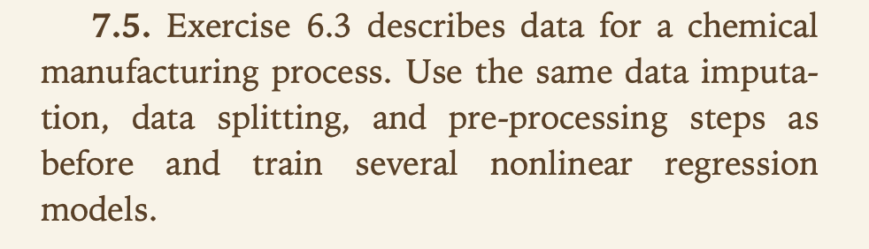
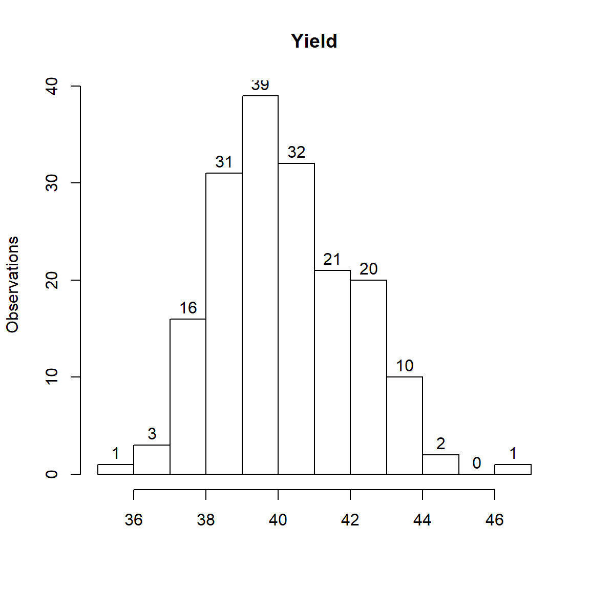
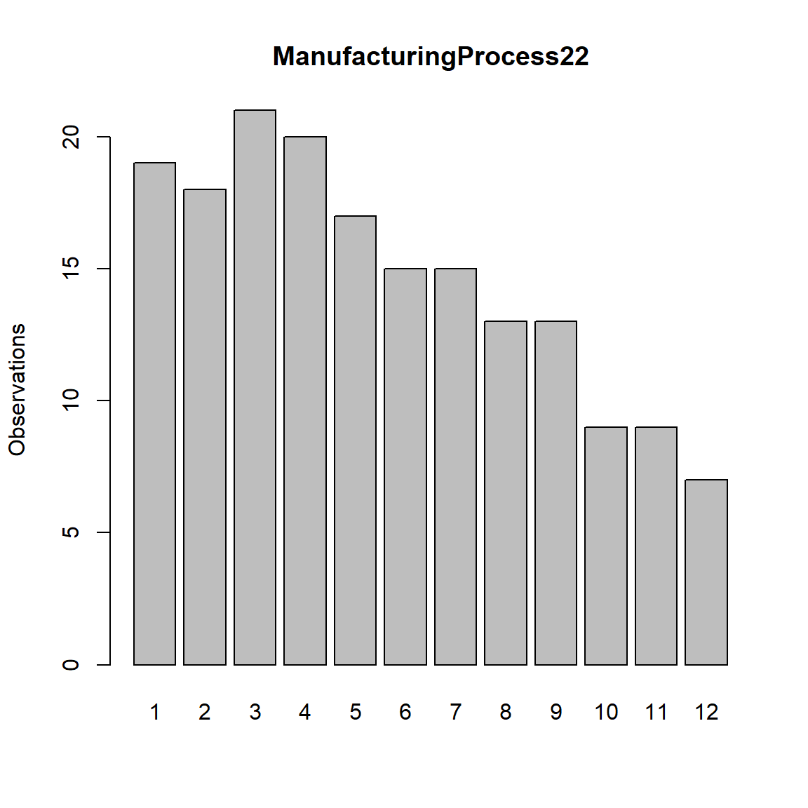
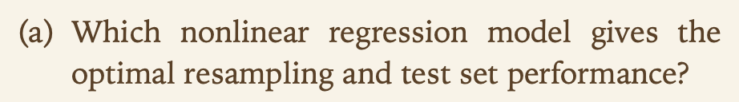
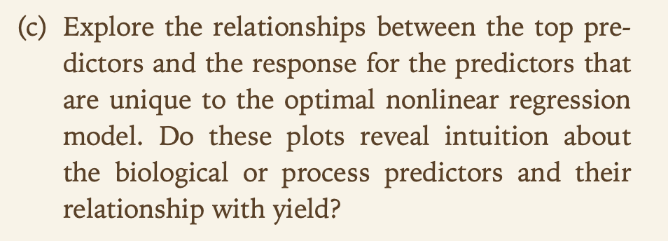

Chapter 3 KJ7
3.1 7.2


Set up training data.
trainingData <- mlbench.friedman1(200, sd = 1)Format training data.
trainingData$x <- data.frame(trainingData$x)Plot training data predictors vs. outcome.
featurePlot(trainingData$x,trainingData$y)
Looks like the first five predictors have a better correlation with the outcome than the last five.
Set up and format test data.
testData <- mlbench.friedman1(5000, sd = 1)
testData$x <- data.frame(testData$x)3.1.1 Preliminary steps
Before we start creating models, let’s set our own seed, separate from the one used to create the input data.
set.seed(1392)Also, write a function to look at error and R-squared of a given model applied to the test data.
error_and_Rsquared <- function(model){
predictions <- predict(model,newdata = testData$x)
return(postResample(pred = predictions, obs = testData$y))
}3.1.2 Neural networks
Let’s try the neural networks method with model averaging.
nnetGrid <- expand.grid(.decay = c(0, 0.01, .1),
.size = c(1:10),
.bag = FALSE)
averaging_nnet_model <- train(trainingData$x,trainingData$y,
method="avNNet",
tuneGrid = nnetGrid,
trControl = trainControl(method = "cv", number = 10),
preProc = c("center", "scale"),
linout = TRUE,
trace=FALSE,
maxit = 500)3.1.3 Multivariate Adaptive Regression Splines (MARS)
Use the earth command from the earth package.
MARS_model <- earth(trainingData$x,trainingData$y)Print model details.
MARS_model## Selected 12 of 18 terms, and 6 of 10 predictors
## Termination condition: Reached nk 21
## Importance: X1, X4, X2, X5, X3, X6, X7-unused, X8-unused, X9-unused, ...
## Number of terms at each degree of interaction: 1 11 (additive model)
## GCV 2.540556 RSS 397.9654 GRSq 0.8968524 RSq 0.9183982summary(MARS_model)## Call: earth(x=trainingData$x, y=trainingData$y)
##
## coefficients
## (Intercept) 18.451984
## h(0.621722-X1) -11.074396
## h(0.601063-X2) -10.744225
## h(X3-0.281766) 20.607853
## h(0.447442-X3) 17.880232
## h(X3-0.447442) -23.282007
## h(X3-0.636458) 15.150350
## h(0.734892-X4) -10.027487
## h(X4-0.734892) 9.092045
## h(0.850094-X5) -4.723407
## h(X5-0.850094) 10.832932
## h(X6-0.361791) -1.956821
##
## Selected 12 of 18 terms, and 6 of 10 predictors
## Termination condition: Reached nk 21
## Importance: X1, X4, X2, X5, X3, X6, X7-unused, X8-unused, X9-unused, ...
## Number of terms at each degree of interaction: 1 11 (additive model)
## GCV 2.540556 RSS 397.9654 GRSq 0.8968524 RSq 0.9183982“Does MARS select the informative predictors (those named X1–X5)?”
For the most part, yes, but not entirely. The MARS model does include all five of the informative predictors (X1-X5) and excludes most of the last predictors that did not appear as correlated with outcome. However, it does also include one of the last predictors (X6).
3.1.4 Support Vector Machine (SVM)
I tried running SVM with a polynomial kernel here, but runtime was impractically long.
However, I will try running with both a linear and radial basis function kernel.
SVM_linear_model <- train(trainingData$x,trainingData$y,
method="svmLinear",
trControl = trainControl(method = "cv", number = 10),
preProc = c("center", "scale"),
tuneLength = 14)SVM_RBF_model <- train(trainingData$x,trainingData$y,
method="svmRadial",
trControl = trainControl(method = "cv", number = 10),
preProc = c("center", "scale"),
tuneLength = 14)3.1.5 K-Nearest Neighbors (KNN)
Let’s run KNN just as it was run in the question example.
knn_model <- train(x = trainingData$x,
y = trainingData$y,
method = "knn",
preProc = c("center", "scale"),
tuneLength = 10)3.1.6 Comparing models
Run function to get error and R-squared for each model.
for(model in c("averaging_nnet_model","MARS_model","SVM_linear_model","SVM_RBF_model","knn_model"))
{
print(model)
print(error_and_Rsquared(get(model)))
}## [1] "averaging_nnet_model"
## RMSE Rsquared MAE
## 2.1103508 0.8249747 1.5810554
## [1] "MARS_model"
## RMSE Rsquared MAE
## 1.8136467 0.8677298 1.3911836
## [1] "SVM_linear_model"
## RMSE Rsquared MAE
## 2.7633860 0.6973384 2.0970616
## [1] "SVM_RBF_model"
## RMSE Rsquared MAE
## 2.092662 0.822730 1.590366
## [1] "knn_model"
## RMSE Rsquared MAE
## 3.2040595 0.6819919 2.5683461Looks like the best model here in terms of both R-squared (aka variance explained) and RMSE/MAE (minimizing error) within the test data is MARS.
After that, the neural network with model averaging and SVM with radial basis function both perform pretty similarly, falling slightly behind MARS but still doing pretty well.
The KNN and SVM with linear kernel models perform the worst out of the five models tested.
3.2 7.5

3.2.1 Initial data loading
A chemical manufacturing process for a pharmaceutical product was discussed previously.
In this problem, the objective is to understand the relationship between biological measurements of the raw materials (predictors), measurements of the manufacturing process (predictors), and the response of product yield.
Biological predictors cannot be changed but can be used to assess the quality of the raw material before processing. On the other hand, manufacturing process predictors can be changed in the manufacturing process. Improving product yield by 1 % will boost revenue by approximately one hundred thousand dollars per batch.
Load the data in R.
data(ChemicalManufacturingProcess)3.2.2 Impute missing values.
A small percentage of cells in the predictor set contain missing values. We are asked to use an imputation function to fill in these missing values.
We find the following NAs in the data.
- Row 1 - Has 11 variables where this row is the only NA for that variable: manufacturing processes 1,4,5,7,8,12,22,23,24,40,41
- Row 23 - Has 1 variable where this row is the only NA for that variable: manufacturing process 14
- Rows 172,173,174,175,176 - Have NAs in manufacturing processes 25-31,33-36 (not 32!)
Rows 1,2,3,4,5,6,22,23,24 - Have NAs in manufacturing processes 3,10, and 11
- Manufacturing process 6 - has NA in rows 1 and 90
Manufacturing process 2 - has NA in rows 1,134, and 139
- Manufacturing process 3 - also has NA in rows 15-20
Manufacturing process 11 - also has NA in row 98
We also find a few outliers that I believe would be good to replace with an NA and impute. These are:
- One row (108) has a 0 for mps 25,26,27,29,30,and 31, while all other observations are significantly larger.
- Mps 16, 18, and 20 all have one zero, while remaining values are >4000.
- Mps 22, 23, 38, 39, 42, 44 and 45 each have a handful of zeros. In most of these variables, these zeros are unusually small relative to the nonzero values. Even when this is not the case (nonzero values aren’t that large), the zeroes are also recurrent within a few rows in a way that makes them seem suspect.
for(var in paste0("ManufacturingProcess",c(16,18,20,22,23,25,26,27,29,30,31,38,39,42,44,45)))
{
zero_indices <- which(ChemicalManufacturingProcess[,var] == 0 & is.na(ChemicalManufacturingProcess[,var]) == FALSE)
ChemicalManufacturingProcess[zero_indices,var] <- NA
}Start with impute.knn.
ChemicalManufacturingProcess_imputed <- impute.knn(as.matrix(ChemicalManufacturingProcess),k=10,rng.seed=1392)
ChemicalManufacturingProcess_imputed <- data.frame(ChemicalManufacturingProcess_imputed$data,check.names=FALSE,stringsAsFactors=FALSE)For manufacturing processes 2 and 28, they are actually bimodal, with a bunch of zeroes then continuous numeric variables that are much larger.
If the imputed value is less than the half the minimum of non-zero values, change to 0.
Also round to match previous level of precision.
for(var in c("ManufacturingProcess02","ManufacturingProcess28"))
{
half_min_value <- min(ChemicalManufacturingProcess[ChemicalManufacturingProcess[,var] > 0,var],na.rm=TRUE)/2
ChemicalManufacturingProcess_imputed[which(is.na(ChemicalManufacturingProcess[,var]) == TRUE & ChemicalManufacturingProcess_imputed[,var] < half_min_value),var] <- 0
ChemicalManufacturingProcess_imputed[,var] <- round(ChemicalManufacturingProcess_imputed[,var],digits=1)
}For remaining variables, imputed values from impute.knn looked good. Just round to the appropriate level of precision within the imputed values.
NAs_per_var <- as.numeric(as.vector(apply(ChemicalManufacturingProcess,2,function(x)length(which(is.na(x) == TRUE)))))
vars_with_NAs <- colnames(ChemicalManufacturingProcess)[NAs_per_var > 0]
vars_with_NAs <- setdiff(vars_with_NAs,c("ManufacturingProcess02","ManufacturingProcess28"))
vars_with_NAs <- setdiff(vars_with_NAs,paste0("ManufacturingProcess",c(16,18,20,38,39,42,44,45))) #Initially did not include these variables when manually calculated appropriate precision. Will round these in a separate loop.
digits_precision <- c(1,2,0,1,1,0,0,1,1,rep(0,times=8),1,1,1,0,1,0,3,1,2)for(i in 1:length(vars_with_NAs))
{
var = vars_with_NAs[i]
digits = digits_precision[i]
ChemicalManufacturingProcess_imputed[,var] <- round(ChemicalManufacturingProcess_imputed[,var],digits=digits)
}vars_with_NAs <- paste0("ManufacturingProcess",c(16,18,20,38,39,42,44,45))
digits_precision <- c(0,0,0,0,1,1,1,1)
for(i in 1:length(vars_with_NAs))
{
var = vars_with_NAs[i]
digits = digits_precision[i]
ChemicalManufacturingProcess_imputed[,var] <- round(ChemicalManufacturingProcess_imputed[,var],digits=digits)
}3.2.3 Data exploration and additional manual transformation
Look at distribution of yield.
hist(ChemicalManufacturingProcess_imputed$Yield,labels=TRUE,xlab="",ylab="Observations",main="Yield")
And of biological variables.
par(mfrow=c(3,4))
for(i in 2:13)
{
hist(ChemicalManufacturingProcess_imputed[,i],
xlab="",ylab="Observations",main=colnames(ChemicalManufacturingProcess_imputed)[i],labels=TRUE)
}
All except 7 look like standard continuous variables, whether normally distributed or skewed.
For BiologicalMaterial07, there are actually 173 observations with 100 and 3 with 100.83, no in between.
Convert to binary where 0 = 100 and 1 = 100.83.
ChemicalManufacturingProcess[,"BiologicalMaterial07"] <- ifelse(ChemicalManufacturingProcess[,"BiologicalMaterial07"] > 100,1,0)Now, on to manufacturing processes.
mps_data <- ChemicalManufacturingProcess_imputed[,14:ncol(ChemicalManufacturingProcess)]
unique_per_mp <- apply(mps_data,2,function(x)length(unique(x)))
mps_data_for_barplots <- mps_data[,unique_per_mp < 12]
mps_data_for_histograms <- mps_data[,unique_per_mp >= 14]
mps_data_barplot_nonpanel <- as.numeric(as.vector(mps_data[,unique_per_mp == 12]))par(mfrow=c(3,4))
for(i in 1:ncol(mps_data_for_barplots))
{
mps_data_for_barplots[,i] <- factor(mps_data_for_barplots[,i],levels=unique(mps_data_for_barplots[,i])[order(unique(mps_data_for_barplots[,i]))])
barplot(table(mps_data_for_barplots[,i]),ylab="Observations",main=colnames(mps_data_for_barplots)[i])
}
barplot(table(mps_data_barplot_nonpanel),ylab="Observations",main=colnames(mps_data)[unique_per_mp == 12])
We find a few variables that should be converted to binary.
We also have a few (e.g. mp 23) that may actually be counts vs. continuous, but we can still treat them the same as we would a numeric variable.
Don’t think we need to worry about special transformation on the ones with more than two unique values.
par(mfrow=c(8,4))
for(i in 1:ncol(mps_data_for_histograms))
{
hist(mps_data_for_histograms[,i],
xlab="",ylab="Obs",main=colnames(mps_data_for_histograms)[i],labels=TRUE)
}
As mentioned earlier, mps 2 and 28 have a bunch of zeroes, then larger values.
Looks like we probably should have also done the 0 to NA then impute for mp 1 earlier. We should do that now along with converting select variables to binary.
All other variables appear to be standard numeric variables with various degrees of skew.
formerly_zero <- which(ChemicalManufacturingProcess_imputed[,"ManufacturingProcess01"] == 0)
ChemicalManufacturingProcess_imputed[formerly_zero,"ManufacturingProcess01"] <- NA
ChemicalManufacturingProcess_imputed <- impute.knn(as.matrix(ChemicalManufacturingProcess_imputed),k=10,rng.seed=1392)
ChemicalManufacturingProcess_imputed <- data.frame(ChemicalManufacturingProcess_imputed$data,check.names=FALSE,stringsAsFactors=FALSE)
ChemicalManufacturingProcess_imputed[,"ManufacturingProcess01"] <- round(ChemicalManufacturingProcess_imputed[,"ManufacturingProcess01"],digits=1)unique_values_per_var <- apply(ChemicalManufacturingProcess_imputed,2,function(x)length(unique(x)))
for(var in which(unique_values_per_var == 2))
{
ChemicalManufacturingProcess_imputed[,var] <- ifelse(ChemicalManufacturingProcess_imputed[,var] == min(ChemicalManufacturingProcess_imputed[,var]),0,1)
}3.2.4 Automated data transformation and redo exploration
Let’s move on to cleaning up in a more automated way using the preProcess function.
Then, I will show code to explore the now-transformed values. Not running this to avoid this becoming too long, but I checked and transformations looked reasonable.
ChemicalManufacturingProcess_predictors_imputed_not_cleaned <- ChemicalManufacturingProcess_imputed[,2:ncol(ChemicalManufacturingProcess_imputed)]
preProcess_params <- preProcess(ChemicalManufacturingProcess_predictors_imputed_not_cleaned,
method=c("BoxCox","center","scale"))
ChemicalManufacturingProcess_predictors_imputed_cleaned <- predict(preProcess_params,ChemicalManufacturingProcess_predictors_imputed_not_cleaned)par(mfrow=c(3,4))
for(i in 1:12)
{
hist(ChemicalManufacturingProcess_predictors_imputed_cleaned[,i],
xlab="",ylab="Observations",main=colnames(ChemicalManufacturingProcess_predictors_imputed_cleaned)[i],labels=TRUE)
}par(mfrow=c(3,4))
for(i in 1:12)
{
plot(ChemicalManufacturingProcess_predictors_imputed_not_cleaned[,i],
ChemicalManufacturingProcess_predictors_imputed_cleaned[,i],
xlab="Before",
ylab="After",
main=colnames(ChemicalManufacturingProcess_predictors_imputed_cleaned)[i])
}par(mfrow=c(9,5))
for(i in 13:ncol(ChemicalManufacturingProcess_predictors_imputed_cleaned))
{
hist(ChemicalManufacturingProcess_predictors_imputed_cleaned[,i],
xlab="",ylab="Obs",main=colnames(ChemicalManufacturingProcess_predictors_imputed_cleaned)[i],labels=TRUE)
}par(mfrow=c(9,5))
for(i in 13:ncol(ChemicalManufacturingProcess_predictors_imputed_cleaned))
{
plot(ChemicalManufacturingProcess_predictors_imputed_not_cleaned[,i],
ChemicalManufacturingProcess_predictors_imputed_cleaned[,i],
xlab="Before",
ylab="After",
main=colnames(ChemicalManufacturingProcess_predictors_imputed_cleaned)[i])
}3.2.5 Training-test split
Now we just need to split the data into an 80-20 training-test split.
set.seed(1392)
trainIndex <- createDataPartition(ChemicalManufacturingProcess$Yield,p=.8,list = FALSE,times=1)
ChemicalManufacturingProcess_transformed <- data.frame(Yield = ChemicalManufacturingProcess$Yield,ChemicalManufacturingProcess_predictors_imputed_cleaned,stringsAsFactors=FALSE)
trainingData <- ChemicalManufacturingProcess_transformed[trainIndex,]
testData <- ChemicalManufacturingProcess_transformed[-trainIndex,]
trainingData <- list(x = trainingData[,2:ncol(trainingData)],y = trainingData$Yield)
testData <- list(x = testData[,2:ncol(testData)],y = testData$Yield)3.2.6 Building models
Set seed before we run all these models.
set.seed(1392)3.2.6.1 Linear model
linear_model <- step(lm(Yield ~ .,data=data.frame(Yield = trainingData$y,trainingData$x)),trace=FALSE)3.2.6.2 Neural networks
Let’s try the neural networks method with model averaging.
nnetGrid <- expand.grid(.decay = c(0, 0.01, .1),
.size = c(1:10),
.bag = FALSE)
averaging_nnet_model <- train(trainingData$x,trainingData$y,
method="avNNet",
tuneGrid = nnetGrid,
trControl = trainControl(method = "cv", number = 10),
preProc = c("center", "scale"),
linout = TRUE,
trace=FALSE,
maxit = 500)3.2.6.3 Multivariate Adaptive Regression Splines (MARS)
Use the earth command from the earth package.
MARS_model <- earth(trainingData$x,trainingData$y)3.2.6.4 Support Vector Machine (SVM)
I tried running SVM with a polynomial kernel here, but runtime was impractically long.
However, I will try running with both a linear and radial basis function kernel.
SVM_linear_model <- train(trainingData$x,trainingData$y,
method="svmLinear",
trControl = trainControl(method = "cv", number = 10),
preProc = c("center", "scale"),
tuneLength = 14)SVM_RBF_model <- train(trainingData$x,trainingData$y,
method="svmRadial",
trControl = trainControl(method = "cv", number = 10),
preProc = c("center", "scale"),
tuneLength = 14)3.2.6.5 K-Nearest Neighbors (KNN)
Let’s run KNN just as it was run in the question example for 7.2.
knn_model <- train(x = trainingData$x,
y = trainingData$y,
method = "knn",
preProc = c("center", "scale"),
tuneLength = 10)3.2.7 a

3.2.7.1 Comparing nonlinear models
Use the function to look at error and R-squared of a given model applied to the test data.
error_and_Rsquared <- function(model){
predictions <- predict(model,newdata = testData$x)
return(postResample(pred = predictions, obs = testData$y))
}Also add a function to get error and Rsquared running model on training data.
error_and_Rsquared_train <- function(model){
predictions <- predict(model,newdata = trainingData$x)
return(postResample(pred = predictions, obs = trainingData$y))
}Run function to get error and R-squared for each model on test data.
for(model in c("averaging_nnet_model","MARS_model","SVM_linear_model","SVM_RBF_model","knn_model"))
{
print(model)
print(error_and_Rsquared(get(model)))
}## [1] "averaging_nnet_model"
## RMSE Rsquared MAE
## 1.6406437 0.4081811 1.3439833
## [1] "MARS_model"
## RMSE Rsquared MAE
## 1.1460383 0.5890902 0.8894378
## [1] "SVM_linear_model"
## RMSE Rsquared MAE
## 1.4887626 0.4111474 1.0380389
## [1] "SVM_RBF_model"
## RMSE Rsquared MAE
## 0.9674454 0.7110587 0.7355990
## [1] "knn_model"
## RMSE Rsquared MAE
## 1.346539 0.437884 1.046375for(model in c("averaging_nnet_model","MARS_model","SVM_linear_model","SVM_RBF_model","knn_model"))
{
print(model)
print(error_and_Rsquared_train(get(model)))
}## [1] "averaging_nnet_model"
## RMSE Rsquared MAE
## 0.2334388 0.9857997 0.1677897
## [1] "MARS_model"
## RMSE Rsquared MAE
## 0.9172357 0.7551188 0.7375057
## [1] "SVM_linear_model"
## RMSE Rsquared MAE
## 0.9060775 0.7621834 0.6234245
## [1] "SVM_RBF_model"
## RMSE Rsquared MAE
## 0.1788744 0.9927243 0.1752104
## [1] "knn_model"
## RMSE Rsquared MAE
## 1.2081737 0.6430018 0.9896870Looks like SVM with radial basis function kernel performs the best on both training and test data.
3.2.8 b

3.2.8.1 Comparing nonlinear vs. linear model
Let’s look in more detail at the optimal nonlinear model.
varImp_nonlinear <- varImp(SVM_RBF_model,scale=TRUE)
top10 <- rownames(varImp_nonlinear$importance)[order(varImp_nonlinear$importance$Overall,decreasing=TRUE)[1:10]]
top10[order(top10)]## [1] "BiologicalMaterial02" "BiologicalMaterial03"
## [3] "BiologicalMaterial06" "BiologicalMaterial12"
## [5] "ManufacturingProcess09" "ManufacturingProcess13"
## [7] "ManufacturingProcess17" "ManufacturingProcess31"
## [9] "ManufacturingProcess32" "ManufacturingProcess36"top10_nonlinear <- top10And the linear model.
varImp_linear <- varImp(linear_model,scale=TRUE)
top10 <- rownames(varImp_linear)[order(varImp_linear$Overall,decreasing=TRUE)[1:10]]
top10[order(top10)]## [1] "ManufacturingProcess04" "ManufacturingProcess13"
## [3] "ManufacturingProcess17" "ManufacturingProcess21"
## [5] "ManufacturingProcess27" "ManufacturingProcess32"
## [7] "ManufacturingProcess33" "ManufacturingProcess37"
## [9] "ManufacturingProcess39" "ManufacturingProcess44"top10_linear <- top10The optimal nonlinear model includes 4 biological variables in the top 10 most important (2,3,6,and 12).
Manufacturing process variables in the top 10 in nonlinear are 9,13,17,31,32, and 36.
The linear model top predictors are all manufacturing processes, no biological materials!
Manufacturing process variables 9, 31, and 36 are also unique as top variables in the nonlinear model.
3.2.9 c

Let’s check out why this might be.
unique_to_nonlinear <- setdiff(top10_nonlinear,top10_linear)
par(mfrow=c(2,4))
for(var in unique_to_nonlinear)
{
plot(trainingData$x[,var],trainingData$y,
xlab="Variable",ylab="Yield",main=var)
}
At least some of these look like they might be correlated to yield better by a curve vs. a straight line. So it makes sense that they weren’t important to (or maybe even selected at all for) by the linear model.